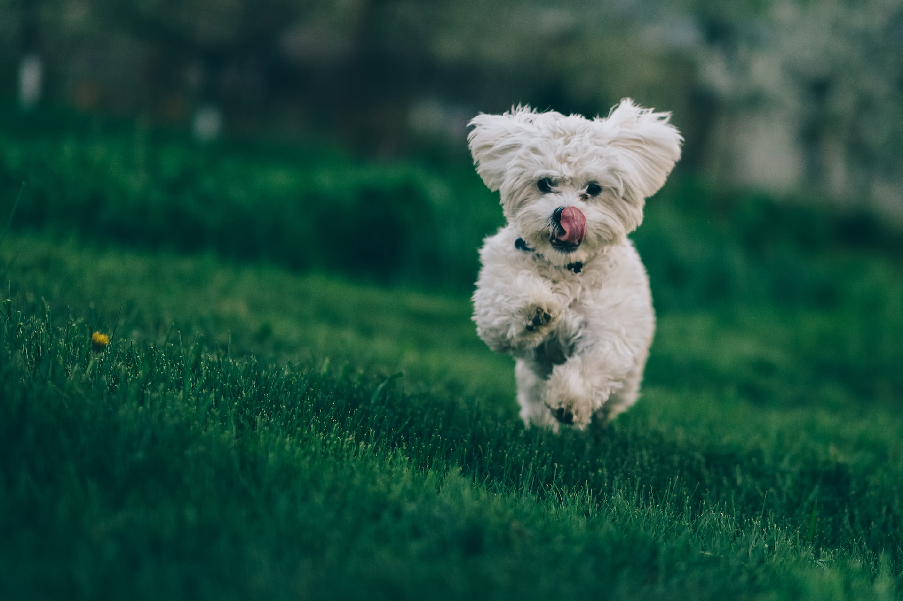

WEB
html
css
JavaScript
html이란 무엇인가?
로이터
, 타스 통신에 따르면 푸틴 대통령은 이날 크렘린궁에서 우크라이나 내 4개 점령지와의 합병 조약 서명을 앞둔 연설에서 이같이 밝히고 "러시아는 모든 수단을 동원해 영토를 지킬 것"이라고 강조했다.
그는 "미국은 일본에 두 차례 핵무기를 사용하는 선례를 남겼다"고 지적하고 "서방은 민주주의를 말할 자격이 없다"고 주장했다.
